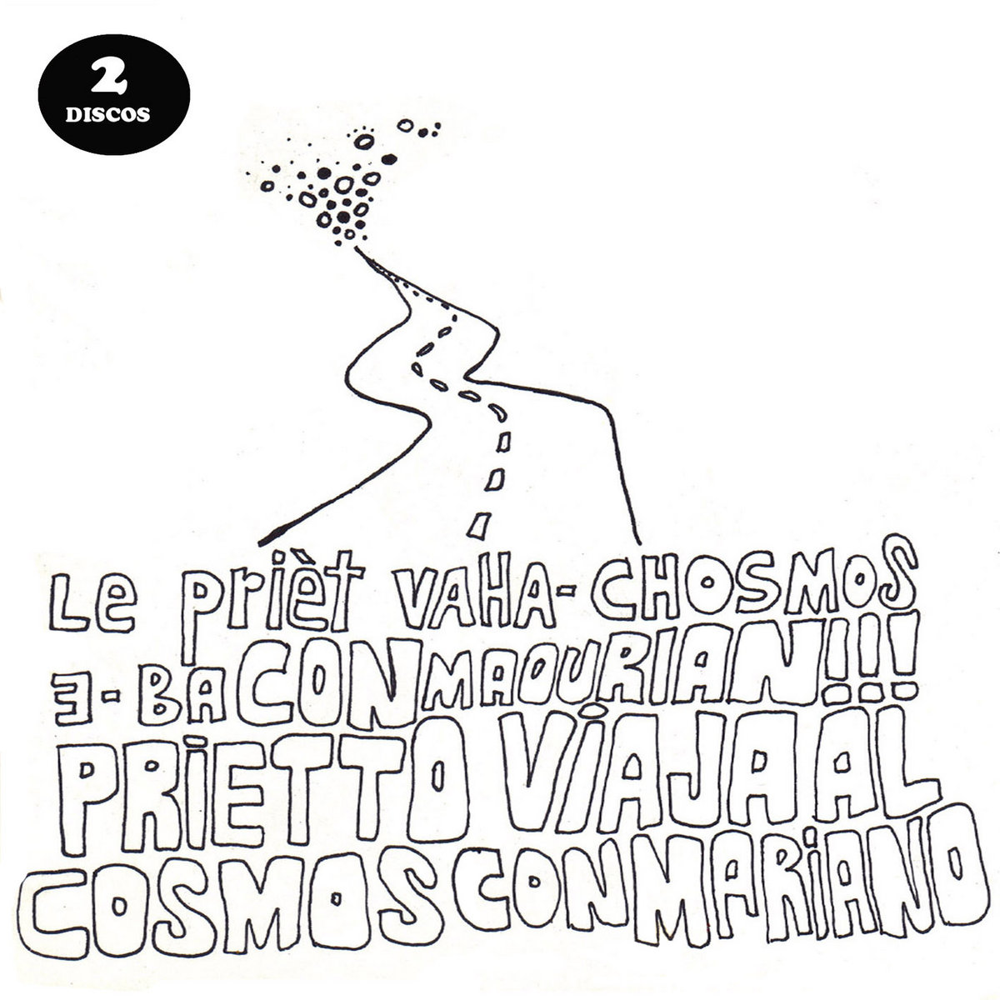

Maxi Prietto — Solista, Los Espíritus y Prietto Viaja al Cosmos con Mariano.
Buenos Aires · AR
seguí bajando ↓

Bio
Mística
Compositor y guitarrista · escena independiente
Mística
de ensayo
Compositor y guitarrista · escena independiente
Músico, guitarrista, cantante y productor argentino que ha consolidado su carrera musical a través de la fusión del blues, el rock psicodélico y los ritmos latinoamericanos. Conocido por su trabajo solista desde aquellas primeras grabaciones Lo Fi de principios de los años 2000 y por sus composiciones en Prietto Viaja al Cosmos con Mariano y Los Espíritus, agrupación fundada en 2010 con la que ha editado seis álbumes de estudio, y ha recibido el premio Konex a la trayectoria. Su trabajo más reciente, La Montaña (2023), fue grabado por Mario Breuer y mezclado en Nueva York por Joe Blaney, afianzando un sonido característico basado en la experimentación y la instrumentación eléctrica combinada con percusiones. La presentación del mismo contó con la apertura internacional del grupo Hermanos Gutierrez en el microestadio Ferro, Buenos Aires.
A lo largo de su trayectoria, Prietto ha mantenido un constante intercambio con músicos de diversas escenas, tanto locales como internacionales. En su discografía se registran colaboraciones junto a artistas como Andrés Calamaro, Gustavo Santaolalla, Marc Ribot y el saxofonista estadounidense Dana Colley, miembro de Morphine. Asimismo, ha compartido escenarios con figuras como Daniel Johnston, Edelmiro Molinari, Bombino, Juanse, Carca, Melingo, entre otros.
Compone y produce música incidental para cine dejando plasmado su lado experimental e instrumental (utilizando guitarras eléctricas, acústicas, samples, moogs) y también componiendo canciones originales para películas como El Motoarrebatador (Agustín Toscano, 2018), La Araña Vampiro (Gabriel Medina), Pin de Fartie (Alejo Moguillansky, 2025), El hijo de Dios (Girod-Fernandez, 2016), El Corral (Sebastián Caulier, 2017), Un Mundo Misterioso (Rodrigo Moreno, 2011), Un cine en Concreto (Luz ruciello, 2017) o la serie Buenos Aires Bajo el Cielo de Orión (Gabriel Medina, 2015).
Actualmente se encuentra de gira con Los Espíritus con quienes realiza regularmente giras internacionales por México, Colombia, Ecuador, Chile, EEUU, España, Francia, Alemania y otros países de Latinoamérica y Europa.
Como solista, Prietto se presenta en vivo con su cuarteto de Blues & Boleros o también en formato Descarnado (Solo Set) en el que ofrece una velada íntima a guitarra y voz.
Periódicamente lanza Singles bajo el nombre de Playa Nocturna en los que reversiona baladas añejas, viejos éxitos de Rock and Roll y Bolero, o canciones de su propia autoría.
Fechas
La ruta
Fechas confirmadas · mapa psicodélico del Cono Sur
La ruta
nocturna
Fechas confirmadas · mapa psicodélico del Cono Sur
Discografía
Registros
Registros
de obra





Streaming
Maxi Prietto en Spotify
Letras
Cancionero
Repertorio completo de canciones por álbum
Cancionero
y Poesía
Repertorio completo de canciones por álbum

Solista · 2015
PRIETTO
1. 2015 album prietto ---
VÍVELO (4:28)
ESTÁS LEJOS (3:23)
2. ESMERALDA
AY, CORAZÓN (5:54))
SUEÑOS DE MACHAGAI (2:44)
3. TRAE ORDEN
Letra y m├║sica: Maxi Prietto
Juan Felipe Correa: Batería y percusiones.
Miguel Tennina: Piano.
Foto de tapa: Juan Francisco Sanchez.
Fotos de grabaci├│n: Marcos Barrera.
Arte y dise├▒o: Santi Pozzi.
4. VIVELO
Vívelo, Vivelo.
No preguntes, vívelo.
ESTÁS LEJOS
Estás lejos, estás lejos,
Pero siempre en mi estarás
Voy a buscarte en un sue├▒o,
Voy a buscarte en las aguas del día.
Tu tumba en el mar, las playas son parte de vos
5. VE E ILUMINA
Ve e ilumina a quien a oscuras va
Ve e ilumina a quien a oscuras va
Y si estas perdida ve a enfrentar el mar
Que en las aguas veras esa fuerza tuya nena, ve a iluminar
6. ESMERALDA
Esmeralda, sigue tu luz viajando.
Por las aguas que se abren hacia ti.
Como en sue├▒os de quienes aman la luz.
AY, CORAZÓN
Ay, ay, coraz├│n. No vale la pena llorar por tu amor.
Ay, ay, coraz├│n, no vale la pena llorar por tu adios.
Que sea lo que la suerte quiera digo tirando monedas que no puedo atrapar.
SUEÑOS DE MACHAGAI
(Instrumental)
7. PERRO DE HOSPITAL
Me siento como un perro en la puerta de un hospital
Esperando a un enfermo que ya no volverá
Juraste otra promesa que ya no cumplirás y
Estoy en tu puerta y vos donde estás?
Mirando las olas, ellas me hacen pensar
Lo que rápido viene, rápido se va.
Y al igual que un linyera que mira un restaurant
Mirando fotos nuestras pas├® la navidad
Es una frase vieja pero es la verdad
Valoramos las cosas cuando ya no están
Mirando las estrellas, ellas me hacen pensar
Que a veces lo que vemos quizás ya no está más
Anoche es tu balcón y vos dónde estás?
Amanece en mi balcón y vos dónde estás?
8. ESPEJO REAL
Y que de las sombras del odio borres tu nombre con luz
Y que a las maderas del miedo puedas quemar al amar
Y que al espejo real reveles tu voz
9. ERROR BLUES
Hay un error en la semilla
Hay un error en la ceniza
Hay un error en la conciencia
Hay un error en no pensar
Hay un error
Hay un error
Hay un error en adaptarse
Hay un error en no cambiar
Hay un error en rendirse
Hay un error en matar
Hay un error
Hay un error
Hay un error en el pecado
Hay un error en la honradez
Hay un error en ser un h├®roe
Hay un error en ser un traidor
Hay un error
Hay un error
Tropec├® con Buda, tropec├® con Jesus
No hay ning├║n camino que me lleve a la luz
Hay un error
Hay un error
En los árboles, en la rama, en la hoja, en la homiga
Hay un error,
Hay un error
En el espacio, en el mundo, en vos y yo
Hay un error
Hay un error
10. LAS AGUAS
Deja tu pasado en las aguas
Hunde tus manos en sus sagradas espumas
La arena pondrá tus pies en esta dirección
El viento y la luna nos acunaran
Que milagro es recordarlos a quienes ya no están
Las mañanas nos regalaran su luz y nos hablará la calma
De las continuas olas
Las mañanas nos escudarán de aquellos bellos espejismos
A los que ciegos creímos que en heladas noches vimos partir
11. LA 844
(Instrumental)
12. TRAE ORDEN
Trae orden a mi vida
Trae orden a mi vida
Orden, orden.
Dijo Prietto a Enrique Blanc para Zona de Obras:
Solista · 2019
Lluvia en la Cumbrecita
1. Lluvia en la cumbrecita ---
Lluvia en la cumbrecita
2. RETORNO
Grabaci├│n de campo y guitarra sola.
Fotos: Facu Plaga, Luciana Bassi.
Solista · 2020
Blanco y Negro
1. Blanco y negro ---
Blanco y negro
Llamado (1:20)
Blanco y negro (24:03)
M├║sica para barrer la mente (14:04)
Solista · 2022
Astro Lo Fi Beats
1. Astro Lo Fi Beats ---
Astro Lo Fi Beats
Vincent (1:14)
Cosa más bonita (0:45)
Ras (1:47)
Días de amor (4:05)
Qui├®n tiene tu amor (1:55)
El Lobo (1:29)
Cerveza Tabaco Caf├® (2:23)
Los amo (0:15)
Todo el mundo sabe (3:11)
Funkaflute (4:09)
Esperanza (2:50)
Astro Lo Fi Beats (0:26)
Groove Fx (2:31)
Ras
Jacarandá hoy ha abierto sus flores
Le cantarán al sol
Noche de luna que alumbras las flores
Le cantarán al sol
Lluvias del mar caerán
Le cantarán al sol
Días de amor
Se queman las flores, se queman los días del amor
En estas aguas ya no hacemos pie,
Para esto nos queda la Fe
Una luz está susurrando versos al corazón
Una luz está sembrando más días para vos
Nacerán más flores, nacerán más días de amor
Y si en las aguas ya no hacemos pie,
Siempre habrá más Fe
Una luz estará susurrando versos al corazón
Una luz estará sembrando más días para vos
Todo el mundo sabe (Leonard Cohen)
Todo el mundo sabe que los dados están cargados
Todo el mundo tira con los dedos cruzados
Todo el mundo sabe que la guerra termin├│
Todo el mundo sabe que el bueno perdi├│
Todo el mundo sabe que la pelea está comprada
Los pobres siguen pobres y los ricos, ricos
Todo el mundo sabe que el barco está agujereado
Todo el mundo sabe que el capitán mintió
Todo el mundo tiene ese sentimiento roto
Como si su padre o su perro hubiese muerto
Todo el mundo va hablando a sus pantalones
Todo el mundo quiere una caja de bombones
Y un ramo de flores, todo el mundo sabe
Todo el mundo sabe son los últimos días
Desde aquel momento en que colgamos al mesías
Todo el mundo sabe que hay olor a podrido
Y que el mundo entero es un enorme baldío
Todo el mundo sabe que mucho no cambiamos
Los pobres siguen pobres y los ricos, ricos
Así es la cosa, todo el mundo sabe
Todo el mundo sabe
Todo el mundo sabe
Solista · 2018
Boleros & Canciones
1. POLI Y PRIETTO ficha tecnica ---
POLI Y PRIETTO ÔÇô BOLEROS Y CANCIONES
2. GUITARRAS, LLOREN GUITARRAS
VEINTE AÑOS (3:08)
3. SI NO TE VAS
EL DÍA QUE ME QUIERAS (4:55)
4. CIGARRILLOS
Producción artística: Maxi Prietto.
Mezcla: Pablo Barros.
Mastering: Gavin Lurssen.
Arreglos por Charly Pacini.
Arreglos tema 9: Alex Musatov.
Maxi Prietto: Guitarra electrica, criolla, tres cubano y voz.
Charly Pacini: Viola.
Alex Musatov: Violín.
Alfredo Zuccarelli: Cello.
Juan Felipe Correa: Maracas y Batería.
Miguel Tennina: Piano y acorde├│n.
Mart├¡n Fernandez Batmalle:Guitarras criolla, gypsy y el├®ctrica.
Fer Barrey: Bong├│.
Santiago Zarba: Saxo Barítono.
Invitados especiales:
Andr├®s Calamaro: Voz y coros en 4, 6 y 8.
Gustavo santaolalla: Ronroco en 5.
Producci├│n ejecutiva: Nacho Perotti y Maxi Prietto.
Fotografías: Juan Francisco Sanchez.
Arte y diseño gráfico: Santi Pozzi.
Citas:
Maxi Prietto para Artezeta:
ÔÇ£La idea fue adue├▒arse de estas canciones, tocarlas como si fueran nuestras, con el relajo y la confianza que da tocar algo propioÔÇØ.
Poli sobre el Bolero para Artezeta:
ÔÇ£Me siento cerca de alguien que cante de un modo muy personal, busco eso en el canto. No me interesa que se ÔÇÿafineÔÇÖ, sino que me hagas temblar cuando te escuchoÔÇØ
Maxi Prietto para Vice:
Solista · 2022
Baño de Bosque
(Canciones instrumentales / Transcripción en proceso)
Solista · 2022
Hogo Sound
1. Hogo Sound ---
Prietto - Hogo Sound
junk jonk intro (0:07)
samuraii (5:22)
2. RA S07
Hogao en D (5:00)
Wuji (0:21)
En las nubes (Feat Seisuke) (4:40)
Hogo Sound (5:46)
3. H H B L U E S
MIKE`s Stuff (5:09)
H H Sh1t (2:59)
Solista · 2022
La Última Noche
(Canciones instrumentales / Transcripción en proceso)
Solista · 2020
Playa Nocturna Vol 2
1. 2020 - Playa Nocturna Vol 1 ---
Playa Nocturna, Vol. 1: El Rey Criollo del Rock and Roll / Definici├│n de Ritmo
Rey criollo del Rock and Roll (Leiber/ Stoller) (1:42)
Definición de ritmo (Oscar Alemán) (3:30)
Producido por Maxi Prietto.
Mastering: Mario Breuer
Batería: Pipe Correa
Piano: Daniel Godfrid
Violín: Alex Musatov
2. 2020 - Playa Nocturna Vol. 2 ---
Playa Nocturna, Vol. 2: Dos Gardenias/ Flotando en la oscuridad
DOS GARDENIAS (Isolina Carrillo) (3:01)
FLOTANDO EN LA OSCURIDAD (Prietto) (3:54)
Piano: Daniel Godfrid
Batería: Pipe Correa
Guitarra: Martin Ferbat
Violín: Alex Musatov
3. FLOTANDO EN LA OSCURIDAD
Pude oírte, pude oírme
Puedo irme o pudrirme aquí
Di lo que quieras hoy, amor
Me voy siguiendo al sol
S├® que habr├í m├ís versos y m├ís besos
y más mañanas
S├® que habr├í m├ís besos y m├ís versos
flotando en la oscuridad
Soy lo que buscan mis pies
Soy lo que buscan mis pies
4. 2021 - Playa Nocturna Vol. 3 ---
Playa Nocturna, Vol. 3: Otra Tumba Más / No Te Rindas
Batería: Pipe Correa
Piano: Miguel Tennina
Saxo Barítono: Santiago Zarba
Violín: Alex Musatov
Viola: Charly Pacini
Cello: Alfredo Zuccarelli
Letra y m├║sica: Maxi Prietto
Dise├▒o: Santi Pozzi
Otra tumba más
Y al final nunca fuimos ricos
Ni encontramos esos sue├▒os
Que dejamos de buscar
Sí, al final, nunca nos fuimos
A vivir a esa caba├▒a en busca de esa paz
Insoportable paz, que nos persigui├│
Como una duda inalcazable, maldita sombra detrás
Y todos los ladrillos hoy se caen
Ni nuestros nombres eran nuestros en verdad
Y esas canciones que grabamos donde están?
Perdidas y enterradas en la posteridad
Si algún trofeo te hizo creer que eras mejor que los demás
Te esperan novedades en la guardia del hospital
Y si la suerte te ahorra ese lugar
Un poquito más linda, o un poquito más fea
Para el cementerio y la tierra serás solo otra tumba más
No te rindas
No te rinas ni aunque veas tu nombre en la lápida
Sí, no te rindas ni aque veas tu nombre en la tumba
La luz te llegará si estás, si estás
La luz te llegará si estás, si estás
5. 2026 - PLAYA NOCTURNA VOL4 ---
Playa Nocturna, vol. 4: Rumbo a Hong Kong/ Sólo una canción más
Rumbo a Hong Kong
Navegando en un barco mercante
Voy rumbo hacia Hong Kong
Maravillado del azul resplandor
Y de los días que me regala el sol
Voy rumbo a hong Kong
Paisaje, rayos de sol
Hay ma├▒anas y hay ma├▒anas
Ámame hasta la muerte
Porque tu eres mi suerte:
Singapur del mar Oriente.
Navegando en un barco mercante
Voy rumbo hacia Hong Kong
Maravillado del azul resplandor
Y de los días que me regala el sol
Voy rumbo a Hong Kong
Paisajes, rayos de sol.
Un mar de aceite, nena
Un mar de aceite, nene
Voy rumbo a Hong Kong
Pisajes rayos de sol
Sólo una canción más
Se van los efectos de otra noche
Y al abrir la ventana ya no queda nada
Sólo una canción más pedís para bailar con el cielo
Y ya ni la luna está
Muertos en el piso están los sueños que más quiso
Ya no hay nadie nuevo a quien culpar
Sólo una canción más pedís para bailar con el cielo
Y ya ni la luna está
Se van los efectos de otra copa
Y al abrir la ventana ya no queda nada
Sólo una canción más pedís para bailar con el cielo
Y ya ni la luna está
Muertos en el piso están los sueños que más quiso
Ya no hay nadie nuevo a quien culpar
Sólo una canción más pedís para bailar con el cielo
Y ya ni la luna está
Solista · 2021
Playa Nocturna Vol 3
1. 2020 - Playa Nocturna Vol 1 ---
Playa Nocturna, Vol. 1: El Rey Criollo del Rock and Roll / Definici├│n de Ritmo
Rey criollo del Rock and Roll (Leiber/ Stoller) (1:42)
Definición de ritmo (Oscar Alemán) (3:30)
Producido por Maxi Prietto.
Mastering: Mario Breuer
Batería: Pipe Correa
Piano: Daniel Godfrid
Violín: Alex Musatov
2. 2020 - Playa Nocturna Vol. 2 ---
Playa Nocturna, Vol. 2: Dos Gardenias/ Flotando en la oscuridad
DOS GARDENIAS (Isolina Carrillo) (3:01)
FLOTANDO EN LA OSCURIDAD (Prietto) (3:54)
Piano: Daniel Godfrid
Batería: Pipe Correa
Guitarra: Martin Ferbat
Violín: Alex Musatov
3. FLOTANDO EN LA OSCURIDAD
Pude oírte, pude oírme
Puedo irme o pudrirme aquí
Di lo que quieras hoy, amor
Me voy siguiendo al sol
S├® que habr├í m├ís versos y m├ís besos
y más mañanas
S├® que habr├í m├ís besos y m├ís versos
flotando en la oscuridad
Soy lo que buscan mis pies
Soy lo que buscan mis pies
4. 2021 - Playa Nocturna Vol. 3 ---
Playa Nocturna, Vol. 3: Otra Tumba Más / No Te Rindas
Batería: Pipe Correa
Piano: Miguel Tennina
Saxo Barítono: Santiago Zarba
Violín: Alex Musatov
Viola: Charly Pacini
Cello: Alfredo Zuccarelli
Letra y m├║sica: Maxi Prietto
Dise├▒o: Santi Pozzi
Otra tumba más
Y al final nunca fuimos ricos
Ni encontramos esos sue├▒os
Que dejamos de buscar
Sí, al final, nunca nos fuimos
A vivir a esa caba├▒a en busca de esa paz
Insoportable paz, que nos persigui├│
Como una duda inalcazable, maldita sombra detrás
Y todos los ladrillos hoy se caen
Ni nuestros nombres eran nuestros en verdad
Y esas canciones que grabamos donde están?
Perdidas y enterradas en la posteridad
Si algún trofeo te hizo creer que eras mejor que los demás
Te esperan novedades en la guardia del hospital
Y si la suerte te ahorra ese lugar
Un poquito más linda, o un poquito más fea
Para el cementerio y la tierra serás solo otra tumba más
No te rindas
No te rinas ni aunque veas tu nombre en la lápida
Sí, no te rindas ni aque veas tu nombre en la tumba
La luz te llegará si estás, si estás
La luz te llegará si estás, si estás
5. 2026 - PLAYA NOCTURNA VOL4 ---
Playa Nocturna, vol. 4: Rumbo a Hong Kong/ Sólo una canción más
Rumbo a Hong Kong
Navegando en un barco mercante
Voy rumbo hacia Hong Kong
Maravillado del azul resplandor
Y de los días que me regala el sol
Voy rumbo a hong Kong
Paisaje, rayos de sol
Hay ma├▒anas y hay ma├▒anas
Ámame hasta la muerte
Porque tu eres mi suerte:
Singapur del mar Oriente.
Navegando en un barco mercante
Voy rumbo hacia Hong Kong
Maravillado del azul resplandor
Y de los días que me regala el sol
Voy rumbo a Hong Kong
Paisajes, rayos de sol.
Un mar de aceite, nena
Un mar de aceite, nene
Voy rumbo a Hong Kong
Pisajes rayos de sol
Sólo una canción más
Se van los efectos de otra noche
Y al abrir la ventana ya no queda nada
Sólo una canción más pedís para bailar con el cielo
Y ya ni la luna está
Muertos en el piso están los sueños que más quiso
Ya no hay nadie nuevo a quien culpar
Sólo una canción más pedís para bailar con el cielo
Y ya ni la luna está
Se van los efectos de otra copa
Y al abrir la ventana ya no queda nada
Sólo una canción más pedís para bailar con el cielo
Y ya ni la luna está
Muertos en el piso están los sueños que más quiso
Ya no hay nadie nuevo a quien culpar
Sólo una canción más pedís para bailar con el cielo
Y ya ni la luna está
Solista · 2022
Playa Nocturna Vol 4
1. 2020 - Playa Nocturna Vol 1 ---
Playa Nocturna, Vol. 1: El Rey Criollo del Rock and Roll / Definici├│n de Ritmo
Rey criollo del Rock and Roll (Leiber/ Stoller) (1:42)
Definición de ritmo (Oscar Alemán) (3:30)
Producido por Maxi Prietto.
Mastering: Mario Breuer
Batería: Pipe Correa
Piano: Daniel Godfrid
Violín: Alex Musatov
2. 2020 - Playa Nocturna Vol. 2 ---
Playa Nocturna, Vol. 2: Dos Gardenias/ Flotando en la oscuridad
DOS GARDENIAS (Isolina Carrillo) (3:01)
FLOTANDO EN LA OSCURIDAD (Prietto) (3:54)
Piano: Daniel Godfrid
Batería: Pipe Correa
Guitarra: Martin Ferbat
Violín: Alex Musatov
3. FLOTANDO EN LA OSCURIDAD
Pude oírte, pude oírme
Puedo irme o pudrirme aquí
Di lo que quieras hoy, amor
Me voy siguiendo al sol
S├® que habr├í m├ís versos y m├ís besos
y más mañanas
S├® que habr├í m├ís besos y m├ís versos
flotando en la oscuridad
Soy lo que buscan mis pies
Soy lo que buscan mis pies
4. 2021 - Playa Nocturna Vol. 3 ---
Playa Nocturna, Vol. 3: Otra Tumba Más / No Te Rindas
Batería: Pipe Correa
Piano: Miguel Tennina
Saxo Barítono: Santiago Zarba
Violín: Alex Musatov
Viola: Charly Pacini
Cello: Alfredo Zuccarelli
Letra y m├║sica: Maxi Prietto
Dise├▒o: Santi Pozzi
Otra tumba más
Y al final nunca fuimos ricos
Ni encontramos esos sue├▒os
Que dejamos de buscar
Sí, al final, nunca nos fuimos
A vivir a esa caba├▒a en busca de esa paz
Insoportable paz, que nos persigui├│
Como una duda inalcazable, maldita sombra detrás
Y todos los ladrillos hoy se caen
Ni nuestros nombres eran nuestros en verdad
Y esas canciones que grabamos donde están?
Perdidas y enterradas en la posteridad
Si algún trofeo te hizo creer que eras mejor que los demás
Te esperan novedades en la guardia del hospital
Y si la suerte te ahorra ese lugar
Un poquito más linda, o un poquito más fea
Para el cementerio y la tierra serás solo otra tumba más
No te rindas
No te rinas ni aunque veas tu nombre en la lápida
Sí, no te rindas ni aque veas tu nombre en la tumba
La luz te llegará si estás, si estás
La luz te llegará si estás, si estás
5. 2026 - PLAYA NOCTURNA VOL4 ---
Playa Nocturna, vol. 4: Rumbo a Hong Kong/ Sólo una canción más
Rumbo a Hong Kong
Navegando en un barco mercante
Voy rumbo hacia Hong Kong
Maravillado del azul resplandor
Y de los días que me regala el sol
Voy rumbo a hong Kong
Paisaje, rayos de sol
Hay ma├▒anas y hay ma├▒anas
Ámame hasta la muerte
Porque tu eres mi suerte:
Singapur del mar Oriente.
Navegando en un barco mercante
Voy rumbo hacia Hong Kong
Maravillado del azul resplandor
Y de los días que me regala el sol
Voy rumbo a Hong Kong
Paisajes, rayos de sol.
Un mar de aceite, nena
Un mar de aceite, nene
Voy rumbo a Hong Kong
Pisajes rayos de sol
Sólo una canción más
Se van los efectos de otra noche
Y al abrir la ventana ya no queda nada
Sólo una canción más pedís para bailar con el cielo
Y ya ni la luna está
Muertos en el piso están los sueños que más quiso
Ya no hay nadie nuevo a quien culpar
Sólo una canción más pedís para bailar con el cielo
Y ya ni la luna está
Se van los efectos de otra copa
Y al abrir la ventana ya no queda nada
Sólo una canción más pedís para bailar con el cielo
Y ya ni la luna está
Muertos en el piso están los sueños que más quiso
Ya no hay nadie nuevo a quien culpar
Sólo una canción más pedís para bailar con el cielo
Y ya ni la luna está
Solista · 2022
Una Velada de Blues & Boleros
1. Una velada de Blues y Boleros ---
Una velada de Blues y Boleros
Perro de hospital (3:29)
Estas lejos (3:08)
Error Blues (5:49)
Ay, Coraz├│n (7:39)
Palmeras (3:26)
Si no te vas (4:05)
Historia de un amor (2:42)
Trae orden (7:10)
Sin luna- Feat. Melingo (4:49)
Fotos: Magdalena Dihel
Solista · 2022
Pin de Fartie (Soundtrack)
1. Pin de Fartie ---
Pin de Fartie (Banda Sonora)
Viene arrastrándose (5:02)
Socorro (Arnaldo Antunes)(3:44)
Todos los instrumentos por Maxi Prietto.
M├║sica original para la pel├¡cula ÔÇ£pin de FartieÔÇØ de Alejo Moguillansky.
Viene arrastrándose
Si hay un final que anda escondido por ahí
Creo que ese final, está frente a mí
Viene arrastrándose
Si hay un día que espera por mí
Será ese día, el día de partir
Viene arrastrándose
Eso que sientes, que nunca vendrá
No importa que sientas vos,
No viene a preguntar
Viene arrastrándose
Si hay una curva que te alejará de mí
Si hay un desvío que me alejará de ti
Viene arrastrándose
Socorro (Arnaldo Antunes)
Socorro no estoy sintiendo nada
Ni miedo ni calor ni fuego
No da para llorar ni reír
Socorro alg├║n alma naufragada
Me preste sus penas
Ya no siento amor, ni dolor
Ya no siento nada.
Socorro alguien me de su coraz├│n
Que este ya no late ni apa├▒a
Por favor, una emoci├│n peque├▒a, cualquier cosa.
Cualquier cosa que se sienta,
Si hay tantos sentimientos,
debe haber uno que sirva.
Socorro, alg├║n camino que me de sentido.
Solo un momento un paliativo para este tormento.
Socorro, ya no siento nada.
Socorro, no estoy sintiendo nada.
Ni miedo, ni calor, ni fuego.
Ni ganas de llorar, ni reír.
Socorro, alg├║n alma naufragada me preste sus penas.
Ya no siento amor, ni dolor, ya no siento nada.
Socorro, alguien me de su coraz├│n,
Que ├®ste ya no late ni apa├▒a.
Por favor, una emoci├│n peque├▒a cualquier cosa
Cualquier cosa que se sienta
Si hay tantos sentimientos,
debe haber uno que sirva.
Espiritus · 2013
Los Espíritus
(Canciones instrumentales / Transcripción en proceso)
Espiritus · 2015
Gratitud
(Canciones instrumentales / Transcripción en proceso)
Espiritus · 2017
Agua Ardiente
(Canciones instrumentales / Transcripción en proceso)
Espiritus · 2019
Caldero
(Canciones instrumentales / Transcripción en proceso)
Espiritus · 2021
Sancocho Stereo
(Canciones instrumentales / Transcripción en proceso)
Espiritus · 2023
La Montaña
(Canciones instrumentales / Transcripción en proceso)
Espiritus · 2010
Hacele caso a tu espíritu!
(Canciones instrumentales / Transcripción en proceso)
Espiritus · 2011
Lo echaron del bar EP
(Canciones instrumentales / Transcripción en proceso)
Espiritus · 2012
El Gato EP
(Canciones instrumentales / Transcripción en proceso)
Cosmos · 2007
Viaja al Cosmos EP
1. Prietto viaja al cosmos con Mariano EP ---
Prietto viaja al cosmos con Mariano (EP)
Av Corrientes (3:07)
Chispas (1:12)
Cruzando el parque (2:32)
La carretera de los incendios
El ojo de Él
Tobogán
Final
Verano fatal
Producido por Prietto viaja al cosmos con Mariano y Shaman Herrera.
Entre la primavera del 2005 y 2006.
Foto: Santiago Moraes.
Av Corrientes
Noche de sábado en capital
Fui a enterrar lo que ser├®
Caminando por Corrientes
Los tontos se mordían los dientes
Y yo, en soledad
Fui a buscar dolor
Solo encontr├® a la felicidad
De ser tan necio
De no estar sobrio
De olvidar, de recordar
Si me había obligado a no extrañar
Noche de sábado en capital
Fui a bautizar lo que no quiero ser
Pero era absurdo
Es que uno es uno y ya
Chispas
Chispas desde lo alto de las monta├▒as.
Chispas de estrellas fugaces, cayendo en los fríos campos del sur.
El anciano hindú mira sus manos, las acaricia y sonríe hacia el altísimo.
Cruzando el parque
1950, Blues en el patio, zarpado verano.
Los tiradores, el vino rojo y las casitas con c├®sped en la entrada.
La televisión con los jopos y la gente felíz de juguete.
Cadillacs derriti├®ndose en la playa y el alma de los negros ri├®ndose en otro lado.
Las fotos se queman y yo me qued├® por ah├¡ cantando.
Silbamos un Rock and Roll cruzando el parque,
en alg├║n lugar del sur del mundo.
La carretera de los incendios
Esta es una canci├│n tradicional en el espacio.
Con esta canci├│n bailan el vals los enamorados,
En las caba├▒as del universo.
El ojo de Él
Por advertencia y amenaza, la letra de El ojo de Él no será traducida al castellano.
Tobogán
Todo el tiempo espero,
S├® que va a llegar y entonces voy a estar bien
Mientras tanto espero,
En días iguales por calles que ni miro,
Personas que ignoro, sigo.
A veces me río y otras pienso
En qu├® es lo que tiene que venir
Si va a venir o si tengo que buscarlo
Se hace la noche,
En mi cama lo s├®
Otra vez no vino
Ni nunca va a venir
Nunca va a venir,
Nunca va a venir.
Final
Esto no es el final
Esto no es el final
No digas que nunca más
Nos vamos a encontrar
Por el mar te guiarán mis sueños más dulces
No creas que nunca más nos vamos a encontrar
Verano fatal
Los días duraban años
Entre tus ojos y el mar
Y las noches duraban siglos
Entre tus gritos y el bar
Fue un verano fatal con las resacas y borracheras
Y en medio de esa guerra que era vivir así
Yo me enamor├® de vos, yo me enamor├® de vos
Y otro día se fue, pareciera que fueran muchos más
En medio de todo este caos
del mar ,del bar, de tu mirada
Son cosas que guardo en la almohada antes de dormir
Consuelos para el día en que no quiera estar vivo
Cosmos · 2014
Los Puedo Viajar
(Canciones instrumentales / Transcripción en proceso)
Cosmos · 2006
Experiencias del Salón Cósmico
(Canciones instrumentales / Transcripción en proceso)
Cosmos · 2011
Le Priët VAHA-CHOSMOS
(Canciones instrumentales / Transcripción en proceso)
Cosmos · 2007
Lou Fai Home sessions vol II
(Canciones instrumentales / Transcripción en proceso)
Cosmos · 2021
Crónicas
1. Cronicas ---
Prietto viaja al cosmos con Mariano
Cr├│nicas
Hasta siempre (2:54)
Algo (2:14)
Carrousel (1:58)
Máscara (3:12)
Rambla (2:22)
Risa (3:17)
Cosmos (1:38)
Diarios (2:34)
Balada (2:24)
Batería y coros: Mariano Castro
Fotos: Juan Francisco Sanchez
Producci├│n general/Managment: Nacho Perotti.
Editado por Alto Valle
Hasta siempre
Con las manos oí el sabor de tu pelo
Es amor lo que se fue
Y a├║n quema tu abrazo
Mientras todo se va
algo queda,
queda y se queda en la garganta
del silencio, de otra noche más.
Ves más ardor que amor.
Alg├║n d├¡a partir├® hasta siempre
Besando lo que se fue
Y aún quedará tu abrazo
Mientras todo se va
Eso quedará
se quedará en el alma
De este coraz├│n
Hasta siempre y más
Ves mas ardor que amor.
Algo
Si al final todo se cae
Y entre los vidrios a├║n queda algo
Dímelo, dime algo
Aunque no sea verdad, te amo.
Dímelo, dime algo,
que al amanecer ya podr├® seguir solo.
Aunque a├║n las noches no pasen de largo
Sin notarlo,
dímelo, dime algo,
aunque no sea verdad, te amo.
Que al amanecer ya podr├® seguir solo.
Aunque a├║n la vida siga girando para cualquier lado
Dímelo, dime algo. Aunque no sea verdad, te amo.
Dime algo,
Que al amanecer ya podr├® seguir solo.
Carrousel
No hay más que hacer
Mira el carrousel
Gira, brillante
Todo te dar├®, siempre.
Todo te dar├®, siempre.
Máscara
Ríe el mundo terminó ayer
En la noche cruzarás el sol
Alguien sigue con su mascara huyendo
A ese mundo donde la fantasía es cruel
Ríe el mundo despertó ayer
En la noche cruzarás el sol
Alguien sigue con su mascara huyendo
A ese mundo donde la fantasía es cruel
Rambla
S├® que es lo que quise
Que hice trampa y
Que no podr├® llegar
Porque es imposible porque todo lo que quiero es no desear
S├│lo entre veredas tropezando con mis penas
Vuelvo a negar
Que soy el primero en traicionarme
Recorriendo esta ciudad
En la rambla, espero
Jurando al cielo
Pruebo en los carteles,
en los subtes y en los trenes de tu pan
suelo apuntar con mis rodillas
cuando me tiro a rezar
el semáforo en luz negra
debí haberme dado cuenta esa señal.
creo en lo que busco,
lo que encuentro
no me importa, en realidad
en la rambla, espero
jurando al cielo
S├® que es lo que quise
Que hice trampa y
Que no podr├® llegar
Porque es imposible porque todo lo que quiero es no desear
Más
Risa
Por esas calles va tu alma
Una y otra vez
Hay un camino de calma
Que nunca eliges tomar
En el agua
Buscas tu nombre
ya sabes
Tu risa es quien eres
Por esas calles va tu alma
Debes dejarlo y volver
Hay un camino de calma
Que nunca eliges tomar
En el aire
Buscas tu nombre
Y ya sabes
Tu risa es quien eres
Diarios
Una paloma muerta en la avenida
Un viejo la mira mientras fuma y vende
Diarios de ma├▒ana o de ayer
Los presos tienen rejas
Nos ni├▒os tienen rejas
Y el perro con correa y bozal
Una ambulancia chocí en la avenida
La gente la mira mientras
Habla y compra
Diarios de ma├▒ana o de ayer
Las plazas tienen rejas
Por fuera las parejas
Corren con correa y bozal
La plaza tiene rejas
Por fuera las parejas
Corren con correa y bozal
Balada
En esa idea de querer había un error
Es que esa tarde de aquel amor
Quizás fue lo peor
Tratar de estar mejor
Arruinamos lo que había de bueno
Cuando caía en la red
Veía amor
Y ahora que s├│lo hay pared
Siento el error
Que crudo error!
Quizás fue lo peor
Tratar de estar mejor
No hay que elegir todo
Si s├│lo somos dos
Más


Contacto
Llegar
Prensa · booking · material físico
Llegar
al cosmos
Prensa · booking · material físico

Para contrataciones, notas de prensa o consultas sobre material físico y vinilos, escribinos a través de los canales oficiales.
Buenos Aires, Argentina · © 2026
Prietto · Cosmos, Blues y Canción